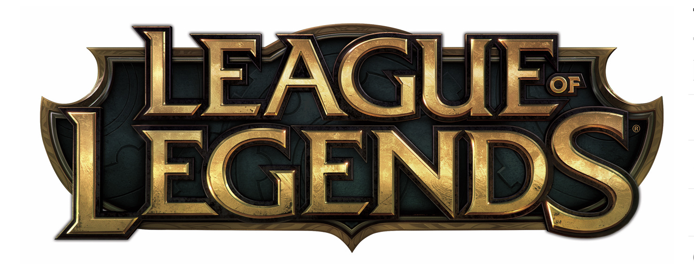
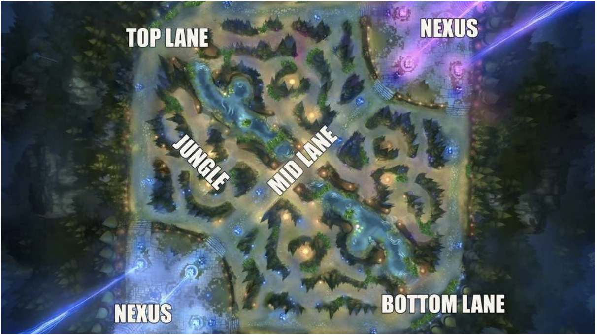

League of Legends (LoL) is an immensely popular multiplayer online battle arena game, with over 100 million monthly active users worldwide. It hosts progressional competitions throughout the year and had 43 million viewers in the 2016 World Championships alone. For context, that’s more than the 30.8 million viewers that watched Game 7 of the 2016 NBA finals! Published by Riot Games, LOL is clearly fun and addictive once you get started. For those who haven’t, here’s a quick overview of the game itself.
10 players are divided into 2 teams (blue or red) in the main LoL game (there are 3 modes). The objective for each team is to destroy the opposing team’s “Nexus”. Think of the Nexus as the main building in a base camp. Destroy the enemy Nexus and your team wins the game. Protect yours or your team loses the game. Simple enough. However, the collaboration often required between teammates to advance on the enemy Nexus, while defending its own, is wonderfully complex.

All of our team members love League of Legends so much and this game has become an integral part of our lives. We really enjoy winning the game, but we are not always win. We know the taste of failure very well . So we are very curious about the deteminants of winning the game, other than personal technologies and team cooperation with these unmeasurable data.
Kills Killing is a very important player behavior in League of Legends games. To be more specific, the killing can be interpreted as your controlled player, called champion in this game, kills enemy’s champion or is killed by enemy’s. It just like the Pokémon you used in the Pokémon game, which is defeated by the opponent’s Pokémon. Killing has a huge potential impact on the progress of the game. On the one hand, killing behavior will bring money to your team, so that you have more money to buy powerful equipments to make your champions stronger. On the other hand, killed enemy’s champions will enter resurrection time and they will not be able to act during resurrection time.
Tower The way to win the League of Legends game is to destroy the opponent’s “Nexus base”. However, before reaching the “Nexus base”, your team should take down towers in order to reveal the “Nexus base”. “Nexus base” cannot be attacked before some of the towers have fallen. Also, destroying the tower can bring more money and map control to your side, which is crucial to the win.
Monsters There are many neutral monsters in the game map. After killing certain monsters, you will get both monetary rewards and additional special effect gains, called buff in the game. Dragon (with 5 different types), Rift Herald and Baron Nashor are the three of the most important monsters.
Glods Glod is the name of money in the game. It enables players to buy powerful equipments for champions they controlled. There are many ways to earn Glod in the game, such as the ones mentioned above: killing, taking down towers and killing netural monsters. A gold lead will give your team a huge game advantage, which will drive your team to victory.